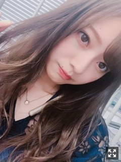
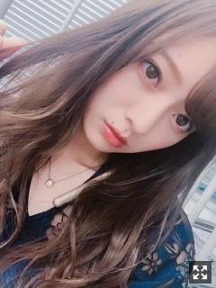
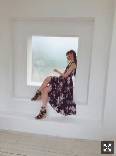

たまには欲張りになってみても
みなさまこんにちは！！
乃木坂46の
梅澤美波です！！


どうもっ
最近涼しくて
外の匂いが好きすぎて外出ると
うう〜すきいいい〜！！！ってなる（笑）
一人でよく歩いてます☺︎
なんだろう、
秋の夜ってめちゃくちゃ好きで、
金木犀はまだ香ってこないけど
夏が終わろうとしてる匂いが、風が
すごく心地よくてすき。◎
好きな音楽聴きながら
散歩してる時間がたまらなくすき☺︎
落ち着く匂い、！！
でもこの季節切なくなりません？
分かりますか？
なんか風が切なく感じる( .. )
それがすき☺︎（笑）
なんと言っても秋服が好き！！
あ〜買い物行きたいっ
観にいきたい舞台やら映画やら
すごくすごく沢山あるのに
中々時間がなくて行けない、、
生で観られるのはその時しかないから
時間ある時に色々勉強しに行かな！！
セラミュの稽古をしていて
頭を悩ませる毎日です！
その人その人の感じ方があるし考えがあるし
色々話し合う度に
ああ、こういう角度からの見方もあるのか
こういう表現の仕方があるのか
って
学ぶことが多くて、多すぎて、
頭がいっぱいです。
嬉しい悲鳴です☺︎
だからこそお芝居楽しい！って思うし
まだまだ知らないこと、
足りない技術、
たくさんあるから学びたいって思う！
もっともっと良いものにしたい！
３期生一人だけのチームだけど
そんなの関係なく受け入れてくれる、
だから遠慮なくその場にいられる！
幸せな環境です☺︎
本場まで一週間切りました！
ぜひお越しください！！
頑張ります！

発売中 BOMBさんオフショット！！
この衣装すき〜
あのね、握手会でね
女の子によく
コスメ何使ってますか？
って聞かれることが多くて
どのパーツのコスメ知りたい！とかあるかな？( .. )
あったらコメントしてくださいっ！
待ってます〜☺︎♪♪
そして！明日は！！
Rakuten GirlsAward ！！
初めてのランウェイです！
緊張しますかなり緊張します、、
でも、楽しんできます！
お楽しみに！！
そしてその後21:00〜は！！
NHKラジオ第一 らじらー！サンデー
に出演させていただきます！！
21時代に続き22時代も！！
仙台生放送以来のらじらー！
すごく楽しみです〜
ぜひ聴いてくださいっ！！
明日はとても盛りだくさんな一日！
がんばるぞ〜
最近撮った空を。ぱしゃり
空フォルダ、
どんどん溜まっていくよ☺︎
癒されますなあ〜
これは七ステの大阪大千秋楽終えて
帰宅途中の車からの一枚！
空の写真見るといつのかも思い出して
思い出に浸れるのもすき（笑）
最近はありがたいことに
毎日色んなお仕事をさせていただいてて
バタバタしているけど
それがすごく幸せです☺︎
常に考えられる何かがあるって
幸せなことです！
色んな面で応援して下さる方に
元気やパワーを与えられたらな、と☺︎
誰かの頑張る理由になる！
私の初期からの活動の心がまえ！
初心を忘れずがんばります☺︎
短くてごめんね！
また更新します！
笑ってみた
笑ってる自撮りが少なくて
載せて〜ってよく言われるので
頑張ってみた（笑）
自分の笑ってる顔
あんまり好きじゃない！（笑）
おやすみ〜
ふと我に返ると、冷静に今の自分を見ると、すごく幸せな環境にいるな〜って思います
自分だけの力では成し得ないことも
色んな人の力と支えで叶えることができる、感謝でいっぱいです☺︎よしっがんばるぞ〜
Original：https://www.nogizaka46.com/s/n46/diary/detail/46772?ima=4951&cd=MEMBER